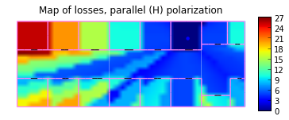
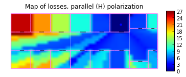

Import the coverage module
In[1]:
from pylayers.antprop.coverage import *
import time
Instantiate a coverage object. By defaut, TA-Office.str layout strucure is loaded.
This information can be modified in the coverage.ini file in the project directory:
[pl_model]
sigrss = 3.0
f = 3.0
rssnp = 2.64
d0 = 1.0
[grid]
xstep= 40
ystep= 20
[layout]
filename = TA-Office.str ;
filename = Lstruc.str
[tx]
x = -10
y = 10
;transmitted power (dBm)
ptdbm = 0
; frame length in
bytes framelengthbytes = 50000
[rx]
sensitivity = -80
bandwidthmhz = 3
temperaturek = 300
noisefactordb = 13
[show]
show = True
C = Coverage()
C.L.filename
'TA-Office.str'
Coverage required the Layout graphs have been produced.
try :
C.L.dumpr()
except:
C.L.build()
Then, the coverage calculation can be launched in calling the cover method
C.cover()
The coverage results can be displayed by invoquing various functions.
C.showPower()

The transmitter coordinates are :
C.tx
array([-10, 10])
This can be modified on the flight, and the coverage is updated
C.tx = np.array((30,12))
%timeit
C.cover()
C.showLoss(polarization='o')
C.showPower(polarization='o')
C.showLoss(polarization='p')
C.showPower(polarization='p')

 


C.tx = np.array((39,1))
start = time.time()
C.cover()
finish = time.time()
print 'All coverage calculated in %1.2f seconds' % (finish-start)
C.showLoss(polarization='o')
C.showPower(polarization='o')
All coverage calculated in 6.88 seconds


The excess delay due to crossing the wall can also be evaluted.
C.tx = np.array((20,4))
C.cover()
C.showEd()